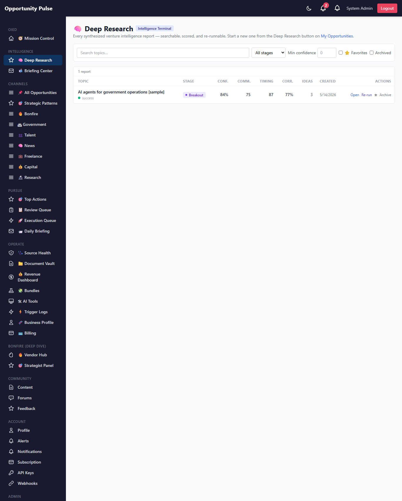
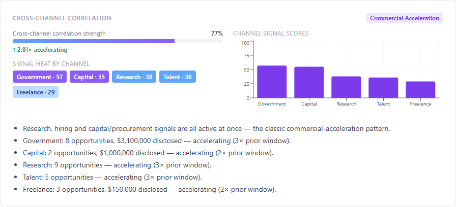
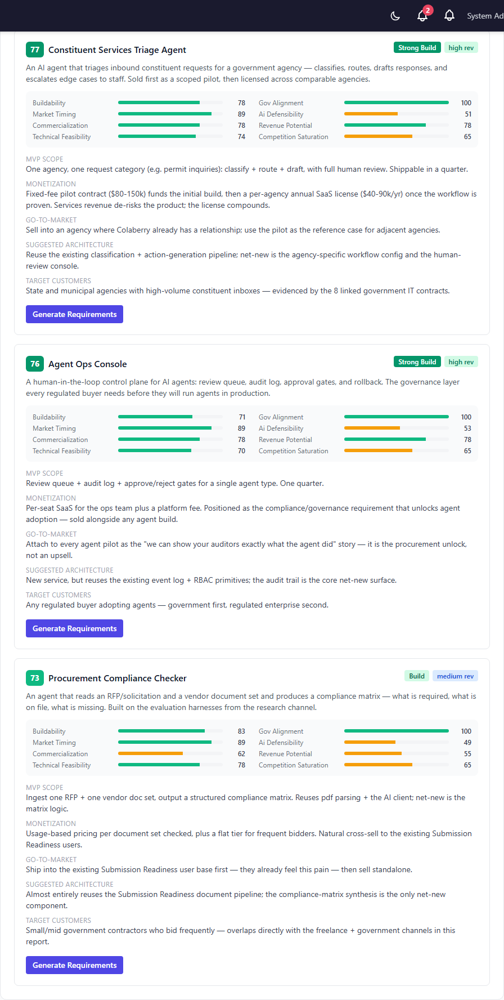
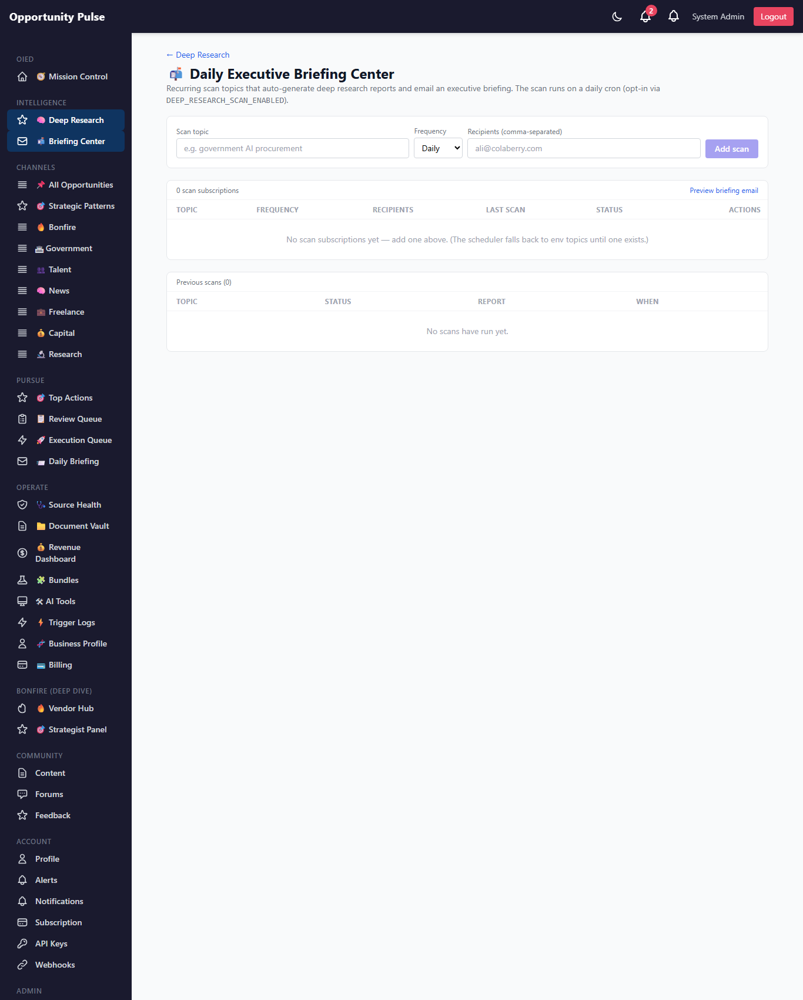

Deep Research Intelligence Engine — Phase 2
Real Strategic Intelligence · 2026-05-14 · commit 796c067 · all 1,630 backend tests passing
Phase 1 built the foundation — the report lifecycle, job tracking, the scheduler scaffolding. Phase 2 turns it into real strategic intelligence: four new analysis engines, a resilient AI layer, report management, and a venture-aware requirements handoff.
The headline is the cross-channel correlation engine — it reads across research, news, talent, capital, government, and freelance to find where signals reinforce each other ("research spike + hiring spike + funding spike = commercial acceleration"). On the seeded sample it correctly classified a commercial-acceleration convergence at 0.77 strength, which the market-timing engine then read as a breakout-stage market.
Three of the four engines are fully deterministic — auditable math, not model opinion — exactly as the spec required ("deterministic scoring pipelines", "no UI-only fake intelligence").
5 tables live 4 intelligence engines AI resiliency reports index re-run + versioning briefing center
The Phase 2 objective
Phase 1's report was a synthesis: an AI narrative plus a venture-idea shortlist. Useful, but it couldn't answer the strategic questions — how do the channels relate to each other? where is this market in its lifecycle? which venture idea actually scores best, and why? how does it make money?
Phase 2 answers all four with dedicated engines, and wraps the whole thing in operational infrastructure: a searchable reports index, versioned re-runs, a DB-driven briefing center, and an AI layer that survives the provider outages Phase 1 was exposed to.
Your feedback on the Phase 2 direction
What shipped
| # | Capability | Delivered |
|---|---|---|
| 1 | Reports Index | /admin/deep-research — searchable, filterable, with scores + re-run/favorite/archive |
| 2 | Cross-Channel Correlation | crossChannelCorrelation.service — deterministic convergence detection |
| 3 | Market Timing | marketTiming.service — deterministic 6-stage lifecycle classifier |
| 4 | Venture Scoring | ventureScoring.service — deterministic 8-dimension weighted scoring |
| 5 | Monetization Intelligence | monetizationIntelligence.service — 6-category models, deterministic fit scoring |
| 6 | AI Resiliency | aiProvider.service — retry, backoff, error classification, logging, provider abstraction |
| 7 | Report Re-Run | versioned re-run — snapshots history into report_versions |
| 8 | Venture-Aware Handoff | projectArchitectBridge upgraded — strategic context, monetization, ICP, GTM, competitive landscape |
| 9 | Briefing Center | /admin/deep-research/briefings — DB-driven scan subscriptions + preview + history |
| 10 | Visual Intelligence | confidence gauges, score bars, correlation strength bars, signal heat strips, an acceleration chart |
Feedback on the shipped scope
The upgraded pipeline
The orchestrator still owns the report lifecycle and delegates every step. Phase 2 inserts the three deterministic engines between synthesis and persistence, and adds monetization as a soft AI step.
Failure-first, unchanged: synthesis is the hard gate; the deterministic engines
(3, 4, 7) never fail; the soft AI steps (5, 6) degrade the report to partial rather
than failing it. Every AI call now goes through the resilient provider layer.
AI resiliency layer
Phase 1's OpenAI outage exposed a single point of failure: one un-retried call could fail the
whole pipeline. aiProvider.service wraps every AI call with:
- Exponential backoff retry with full jitter — only on transient classes (rate_limit, server, network).
- Typed error classification —
rate_limit/auth/server/network/bad_response/other. Auth + bad-response fail fast (no pointless retries). - Per-attempt logging to
ai_provider_logs— provider, model, status, attempt #, duration, tokens, error class. Full observability; logging failure can never break the call it observes. - Provider abstraction — OpenAI is wired; Anthropic / Gemini are explicit, documented stubs. A future fallback provider is a localized change in one registry, no caller touched.
PROVIDERS registry. Each provider exposes the same
{ chat, embed, model } shape. Wiring Anthropic means filling in one entry — the retry
manager, classification, and logging are all provider-agnostic.
Feedback on the resiliency approach
Cross-channel correlation engine
The most important Phase 2 capability — and fully deterministic. For each channel it computes a signal: volume (soft-capped count), recency (fraction of opportunities in the last 90 days), value, and an acceleration ratio (recent window vs. prior window). Each signal is scaled by a defined commercial weight — capital and government weigh heaviest (demand proof), research is supply-side, news is the weakest signal alone.
From the set of "active" channels it classifies the convergence pattern:
| Pattern | Trigger |
|---|---|
commercial_acceleration | research + talent + (capital or government) all active |
procurement_pull | research + government |
capital_convergence | capital + (talent or research) |
talent_convergence | talent + ≥1 other channel |
research_only / diffuse / none | single-channel / broad-but-unpatterned / nothing |
correlation_strength is a 60/40 blend of breadth (active channels ÷ total) and depth (mean active signal score) — so one very strong channel can't fake a "correlation". acceleration is the volume-weighted mean of the per-channel acceleration ratios. Every number traces back to the channel data it came from.
deterministic On the seeded sample: commercial_acceleration,
strength 0.771, acceleration 2.81×.
Feedback on the correlation engine
Market timing engine
Deterministic lifecycle classification. It consumes the correlation output and reads it along two axes:
- Momentum — the acceleration ratio, re-centered onto 0-1.
- Maturity — total volume (soft-capped) blended with breadth (channels carrying signal).
The (momentum × maturity) quadrant maps to one of six stages:
emerging → acceleration → breakout → mainstream → saturated → declining.
A low acceleration ratio (recent window well below prior) overrides the quadrant to
declining. Each report carries the stage, a timing_score (a single
"market heat" number), a rationale, and a confidence that reflects how much
corroborating data the classification actually had — thin data, low confidence, regardless of how
clean the quadrant looks.
deterministic On the seeded sample: breakout, timing score 0.87, confidence 0.84.
Feedback on the timing engine
Venture scoring engine
Deterministic, auditable scoring of each venture idea across 8 dimensions, every one computed from real inputs — the idea's own fields, the report context, and the correlation + timing outputs:
commercialization · buildability · market_timing ·
competition_saturation · technical_feasibility ·
revenue_potential · gov_alignment · ai_defensibility
The dimension weights are a defined model (module constants that sum to 1.0) —
not magic numbers buried in the math. The weighted composite (0-100) maps to a
recommendation level: strong_build (≥75) / build (≥60) /
watch (≥42) / pass. Same inputs always produce the same score — the
engine has an explicit determinism test.
deterministic On the seeded sample, the Constituent Services Triage Agent scored 77.5 → strong_build.
Feedback on the scoring engine
Monetization intelligence engine
Hybrid by design. The model content — pricing, ICP, revenue model — is AI-generated (it's inherently creative). But the structure is fixed (six model types: SaaS, enterprise, government, education, services, marketplace) and the fit_score is deterministic — computed from the report's channel signal mix. So which models actually fit is auditable math, not a model opinion: a government model scores high when the government channel carries real signal; a SaaS model leans on research + talent; a marketplace model needs broad signal.
Feedback on the monetization engine
Reports index
/admin/deep-research is the command center — every synthesized report in a
searchable, filterable table: market stage, confidence, commercialization + timing scores,
correlation strength, venture idea count. Filter by topic, stage, min confidence, favorites, or
archived. Per-row actions: open, re-run, favorite, archive.
Re-run + versioning
A re-run snapshots the current full report into an immutable report_versions row,
bumps the report's version, clears the prior intelligence rows, and re-runs the pipeline on the
same report id — so the URL is stable and the history is preserved. The report
page shows the current version and how many prior versions exist.
Venture-aware requirements handoff
Phase 1's projectArchitectBridge produced a topic summary. Phase 2 makes the
requirements scaffold venture-aware: it now carries the strategic context
(market stage, correlation strength, convergence type, the venture's composite score), the full
monetization model set (best-fit first), the ICP, the GTM motion, and a competitive-landscape
block (market stage, convergence, opportunity signals, competition-saturation score). The Agent
Foundry seam is unchanged — still the single _dispatchToAgentFoundry function — it
just hands off a far richer payload.
Daily executive briefing center
/admin/deep-research/briefings — the daily scan is now DB-driven.
Each briefing_subscriptions row is a recurring scan topic with a frequency, a
recipient list, and an on/off flag. The scheduler reads enabled rows and runs the ones that are
due; env topics remain as a zero-config fallback when no subscriptions exist. The UI manages
subscriptions, previews the briefing email (rendered in an iframe), and shows the history of
previous scans. Delivery stays opt-in and conservative — same posture as every other scheduler.
Feedback on the management surfaces
Screen — the reports index
The intelligence terminal: every report scored and re-runnable, with a dedicated sidebar section.

The reports index — market stage, confidence, commercialization / timing / correlation scores, and per-row actions.
Feedback
Screen — cross-channel correlation

The correlation section: strength bar + acceleration, the per-channel signal heat strip, the channel signal-score chart (bars colored by acceleration), and the supporting evidence — with the Commercial Acceleration convergence badge.
Feedback
Screen — venture scoring

Venture idea cards — composite score chip, recommendation badge, and the 8-dimension score bars.
Feedback
Screen — briefing center

The briefing center — add scan subscriptions, manage frequency + recipients, preview the email, review scan history.
Feedback
Database schema
Migration 20260514000002-deep-research-phase-2.js — 5 tables + columns, applied live on prod.
report_versions immutable report snapshots (report_id, version, snapshot JSONB)
signal_correlations correlation engine output (strength, acceleration, convergence_type,
signal_breakdown JSONB, supporting_evidence JSONB)
monetization_models monetization engine output (model_type, pricing, icp, revenue_model,
implementation_complexity, fit_score)
ai_provider_logs every AI attempt (provider, model, status, attempt, duration_ms,
tokens_used, error_class)
briefing_subscriptions DB-driven scan config (scan_topic, frequency, recipients, enabled,
last_scan_at)
+ deep_research_reports : version, is_favorite, is_archived, timing_score,
commercialization_score, correlation_strength
+ venture_ideas : composite_score, recommendation_level, scores JSONB
API routes
All under /api/v1/deep-research, admin-only. Phase 2 additions in bold context:
GET /api/v1/deep-research reports index (search + filters) POST /api/v1/deep-research/:id/rerun versioned re-run PATCH /api/v1/deep-research/:id/flags favorite / archive GET /api/v1/deep-research/:id/versions version history GET /api/v1/deep-research/briefings list scan subscriptions POST /api/v1/deep-research/briefings create subscription PATCH /api/v1/deep-research/briefings/:id update subscription DELETE /api/v1/deep-research/briefings/:id delete subscription GET /api/v1/deep-research/briefings/preview render the briefing email GET /api/v1/deep-research/briefings/history previous scan log (+ the Phase 1 routes: /run, /:id, /:id/status, /:id/generate-requirements, /jobs/:id/status)
Route ordering: the collection + static routes are declared before the /:id param routes so the matcher can't swallow them.
Files changed
New — backend
backend/src/migrations/20260514000002-deep-research-phase-2.js
backend/src/models/{ReportVersion,SignalCorrelation,MonetizationModel,AiProviderLog,BriefingSubscription}.js
backend/src/deepResearch/aiProvider.service.js resilient AI layer
backend/src/deepResearch/crossChannelCorrelation.service.js correlation engine
backend/src/deepResearch/marketTiming.service.js timing engine
backend/src/deepResearch/ventureScoring.service.js scoring engine
backend/src/deepResearch/monetizationIntelligence.service.js monetization engine
backend/src/deepResearch/briefingSubscription.service.js briefing CRUD
backend/scripts/capture-deep-research-phase-2-walkthrough.js
backend/tests/deepResearch/{aiProvider,crossChannelCorrelation,marketTiming,
ventureScoring,monetizationIntelligence,briefingSubscription}.test.js
New — frontend
frontend/src/pages/DeepResearchIndexPage.jsx the intelligence terminal frontend/src/pages/BriefingCenterPage.jsx the briefing center frontend/src/components/deepResearch/IntelVisuals.jsx gauges / bars / badges / heat strips
Modified
backend/src/deepResearch/deepResearch.service.js orchestrator wires the 4 engines + listReports/reRun/flags
backend/src/deepResearch/strategySynthesis.service.js → aiProvider
backend/src/deepResearch/ventureIdeaGenerator.service.js → aiProvider
backend/src/deepResearch/projectArchitectBridge.service.js venture-aware handoff
backend/src/deepResearch/dailyResearchScheduler.service.js DB-driven scan plan
backend/src/deepResearch/deepResearch.controller.js + .routes.js Phase 2 endpoints
backend/src/models/{index,DeepResearchReport,VentureIdea}.js
backend/scripts/seed-deep-research-sample.js runs the real engines
frontend/src/services/deepResearchService.js · pages/DeepResearchReportPage.jsx
frontend/src/App.jsx · components/common/Sidebar.jsx
53 new tests; full suite 139 suites / 1,630 tests passing.
Validations performed
| # | Check | Result |
|---|---|---|
| 1 | Migration runs clean on prod | ✅ migrated (0.300s) |
| 2 | All 5 tables + 9 columns created | ✅ verified in pg_tables / information_schema |
| 3 | Correlation engine produces output | ✅ seeded sample → commercial_acceleration, strength 0.771 |
| 4 | Market timing classifications stable | ✅ seeded sample → breakout, deterministic test asserts stability |
| 5 | Venture scores persist | ✅ composite 77.48, strong_build, 8 score dimensions on the row |
| 6 | Monetization models generate | ✅ 3 models persisted with deterministic fit scores |
| 7 | AI retries function correctly | ✅ retry-on-transient / fail-fast-on-auth covered by tests; classification verified on prod |
| 8 | Report reruns preserve history | ✅ snapshots into report_versions, bumps version (test + service logic) |
| 9 | Briefing center functions | ✅ create / delete subscription verified on prod; recipients normalized |
| 10 | Reports index works | ✅ listReports returns rows + venture idea counts; filters applied |
| 11 | Existing reports still load | ✅ getReport returns Phase 2 shape (correlation + monetization included) |
| 12 | Existing requirements generation still works | ✅ projectArchitectBridge tests pass; handoff payload enriched |
| 13 | Existing scheduler + channels unaffected | ✅ full suite 139 suites / 1,630 tests green |
Feedback on validation coverage
Known limitations
- Live AI synthesis still not validated end-to-end — OpenAI quota exhausted. The prod OpenAI account still returns 429. The deterministic engines (correlation, timing, scoring + monetization fit) were validated against the seeded sample by running the real engine code on prod; the AI steps (synthesis, venture ideas, monetization content) are covered by unit tests including the failure paths. Crucially, the new resiliency layer means a transient outage now retries instead of failing the run outright — but a fully-exhausted quota still degrades the report. Live end-to-end validates as soon as the quota is restored.
-
Anthropic / Gemini providers are stubs. The abstraction seam is built and
tested; wiring a real fallback provider is a localized change in the
PROVIDERSregistry. (This directly de-risks the quota issue above once done.) -
Per-channel recency is window-based. The correlation + timing engines use
90-day / 180-day windows from each opportunity's
publishedAt. Opportunities with a missing date are treated as old — accurate for most channels, slightly conservative for any source that doesn't populatepublishedAt. -
The briefing email still sends conservatively. A subscription with no
recipients (or no
DEEP_RESEARCH_BRIEFING_TO) renders the briefing but does not send — deliberate until delivery is turned on. -
Reports index is unpaginated past the first 100.
listReportscaps at 100 rows; a cursor/pager is a small Phase 3 addition once report volume warrants it.
Recommended Phase 3
- Wire the Anthropic fallback provider. The seam is built — this is the highest-leverage next step: it makes the whole engine resilient to the exact OpenAI outage that's blocked live validation twice.
- Live synthesis validation + prompt tuning. Once a provider is healthy, run live reports end-to-end and tune the three AI prompts against real output.
- The real Agent Foundry integration. Replace
_dispatchToAgentFoundrywith the live HTTP handoff — the venture-aware payload is already built for it. - Correlation over time. Today correlation is a snapshot. Persisting it per re-run (the version history already does) unlocks a "is this market's correlation strengthening?" trend.
- Autonomous venture progression. The daily scan + scoring already rank ventures; the next step is acting on the highest-confidence
strong_buildideas automatically — gated, human-in-the-loop. - SSE for the requirements modal + a reports pager. Both small, both deferred from earlier phases.
Feedback on the Phase 3 roadmap
Final notes
Phase 2 is shipped and deployed. The four intelligence engines, the resilient AI layer, the reports index, versioned re-runs, the venture-aware handoff, and the briefing center are all live on prod. The full backend suite — 1,630 tests — is green.
The three deterministic engines were validated by running the real engine code against a seeded sample on prod: it correctly read a commercial-acceleration convergence at 0.77 strength, classified the market as breakout, and scored the lead venture idea 77.5 → strong_build. The one thing still waiting on the outside world is a healthy AI provider — and Phase 2's resiliency layer plus the provider seam are precisely what makes that a one-step fix.
Anything not captured anywhere above: